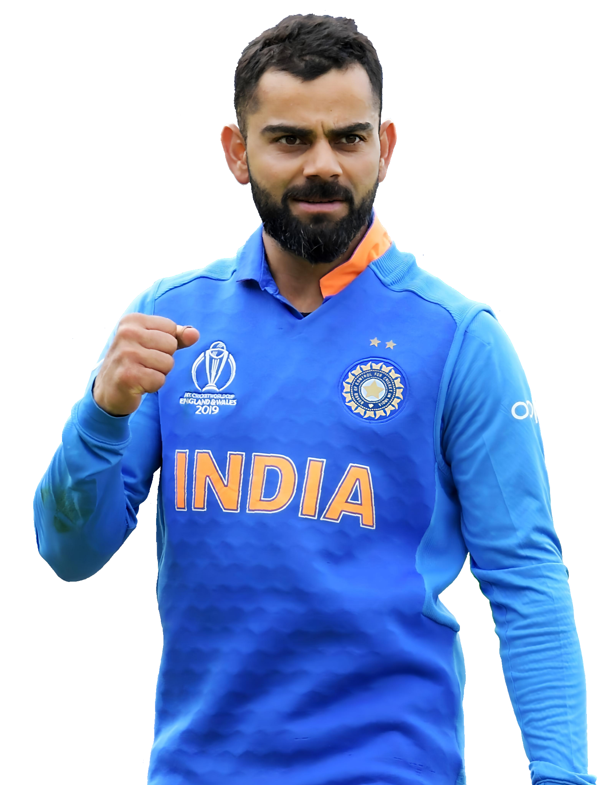

Virat Kohli
1988 - Present
"Self-belief and hard work will always earn you success."
Biography
Virat Kohli is an Indian international cricketer and former captain of the Indian national team. Widely regarded as one of the greatest batsmen in the history of cricket, Kohli has numerous records across all formats of the game. Known for his aggressive batting style, fitness, and determination, he has been a key figure in Indian cricket’s success in the 21st century. Kohli has inspired millions with his discipline, passion, and dedication, becoming a true role model for aspiring cricketers worldwide.